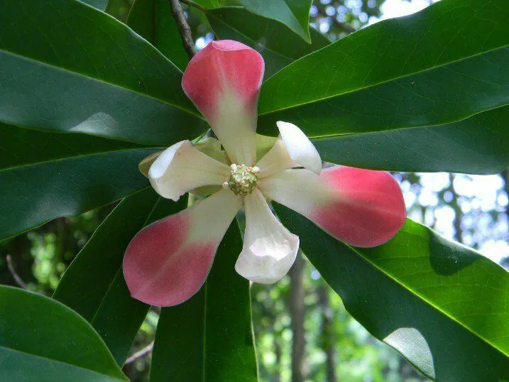

乔木 · 植物界
红花木莲 Manglietia insignis

木兰科木莲属常绿乔木，花被片粉红至紫红色、芳香，聚合果紫红开裂，是滇西与藏东南常绿阔叶林中的珍稀树种。
- 分类
- 门被子植物门纲木兰纲目木兰目科木兰科属木莲属
- 栖息环境
- 海拔 1000–2500 米的山地常绿阔叶林与针阔混交林，喜温暖湿润
- 地理分布
- 中国云南、广西、贵州、西藏东南部、湖南；尼泊尔、印度、缅甸也有
- 保护级别
- 中国国家二级保护野生植物；天然林破坏使野生种群下降
物种志
红花木莲为常绿乔木，高可达 30 米，树皮灰褐色，小枝具托叶痕。叶片革质，倒披针形至长圆状倒披针形，长 10–20 厘米，下面苍绿色。花单生枝顶，花被片 9 枚，粉红色至紫红色，肉质芳香，直径 8–10 厘米；聚合果卵状圆柱形，长 6–10 厘米，成熟时紫红色并开裂，露出红色种子。
本种分布于云南、广西、贵州、西藏东南部及湖南等地，也见于尼泊尔、印度、缅甸，生于海拔 1000–2500 米的山地常绿阔叶林与针阔混交林中，喜温暖湿润、多云雾的环境。它花大色艳、树形优美，是滇西与藏东南重要的观花树种；木材可供建筑与家具。因天然林破坏与过度采挖，野生种群下降，被列为国家二级保护野生植物。
形态与习性
- 株高可达 30 米，树皮灰褐色
- 花期5–6 月，花粉红至紫红色
- 果期10–11 月，聚合果紫红色
- 光照喜光，幼树稍耐阴
- 水分喜湿润多雾，忌干旱
- 海拔1000–2500 米的山地云雾带
- 主要用途观花树种、建筑与家具用材
趣味知识
- 红花木莲的花粉红至紫红，在绿色林海中格外醒目，被称为“木上莲花”。
- 它的分布西起尼泊尔、东至中国湖南，横跨喜马拉雅东段与云贵高原。
- 红花木莲的花可提取芳香油，木材细致，是滇西传统的优质用材。
- 由于野生大树被大量采挖作园林树，它已被列为国家二级保护植物。